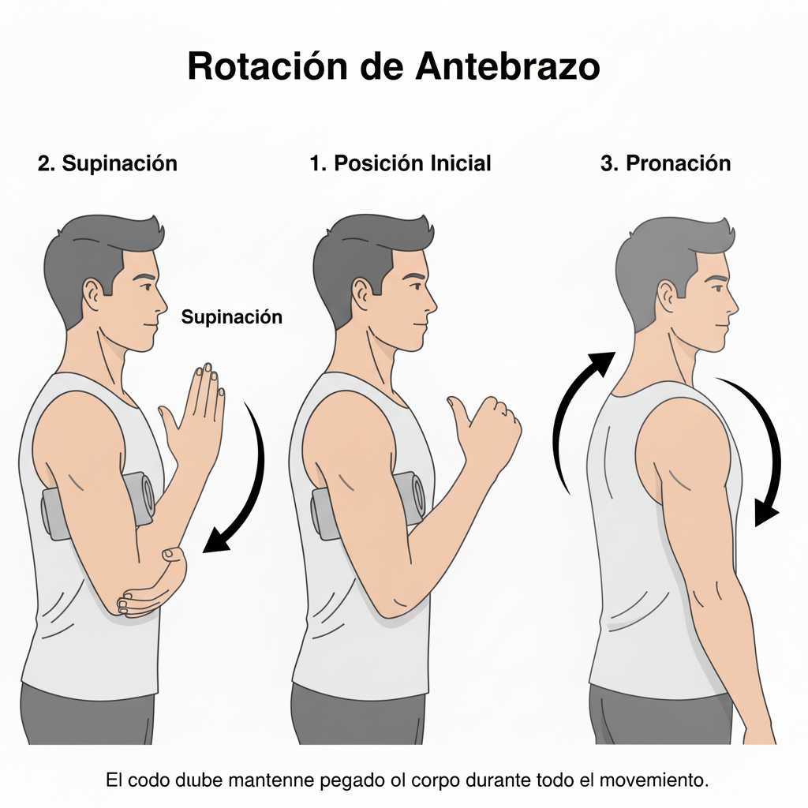
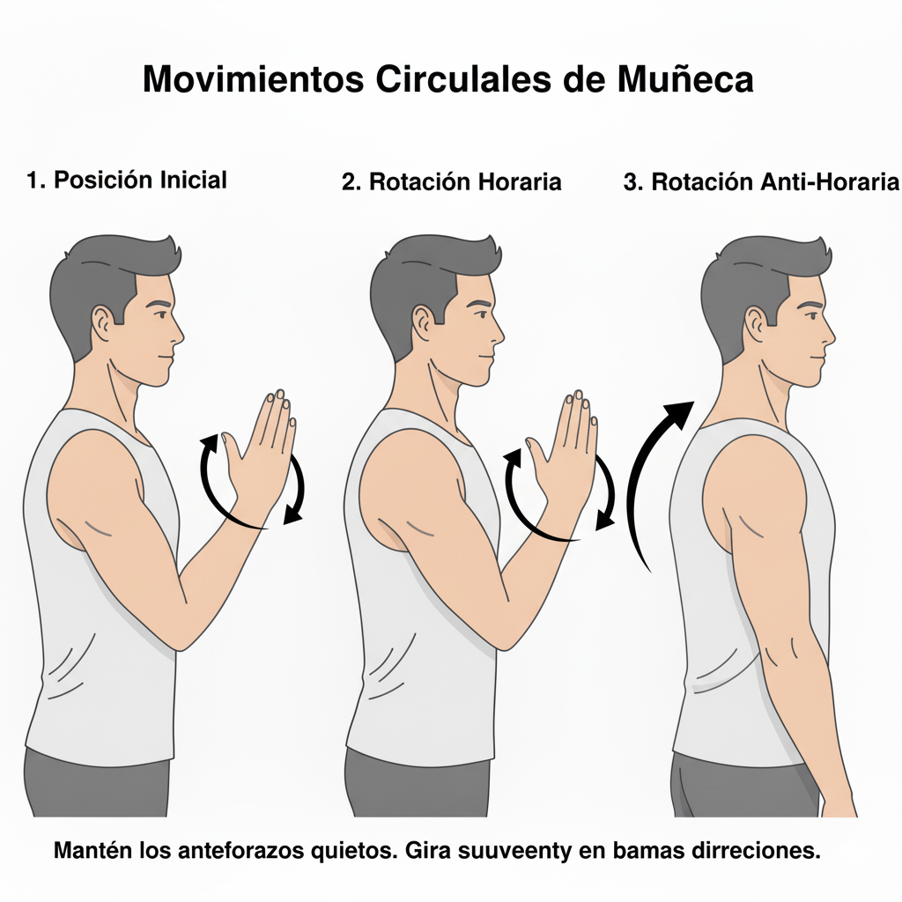
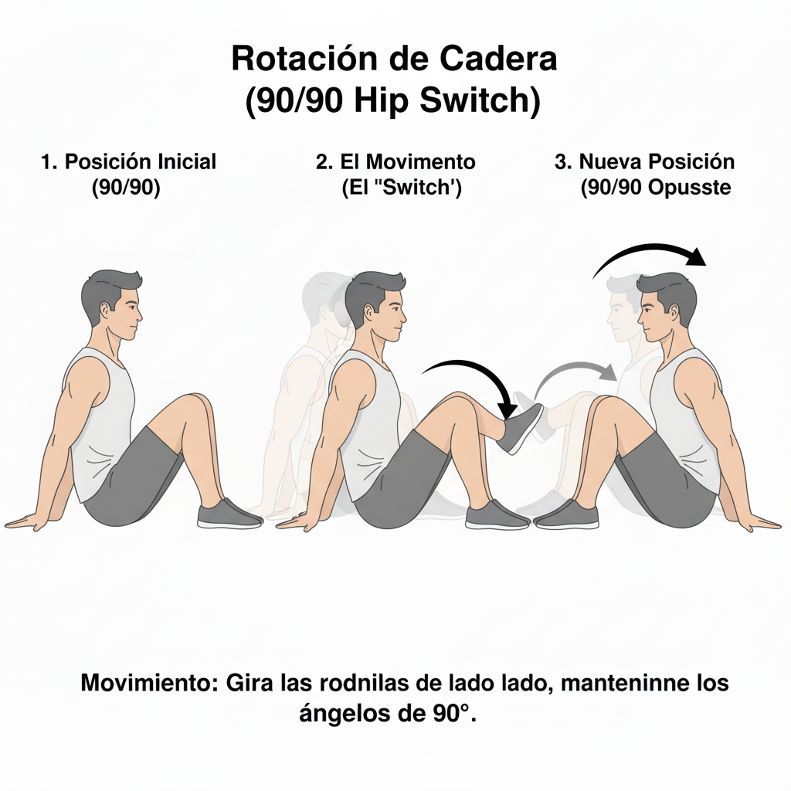
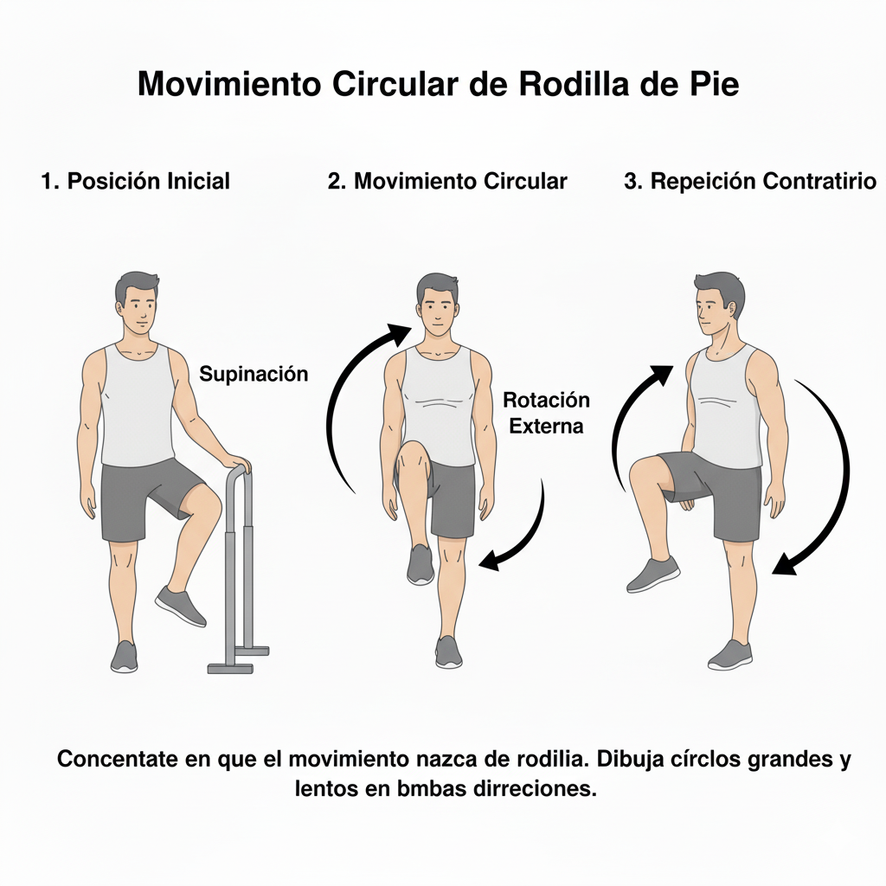
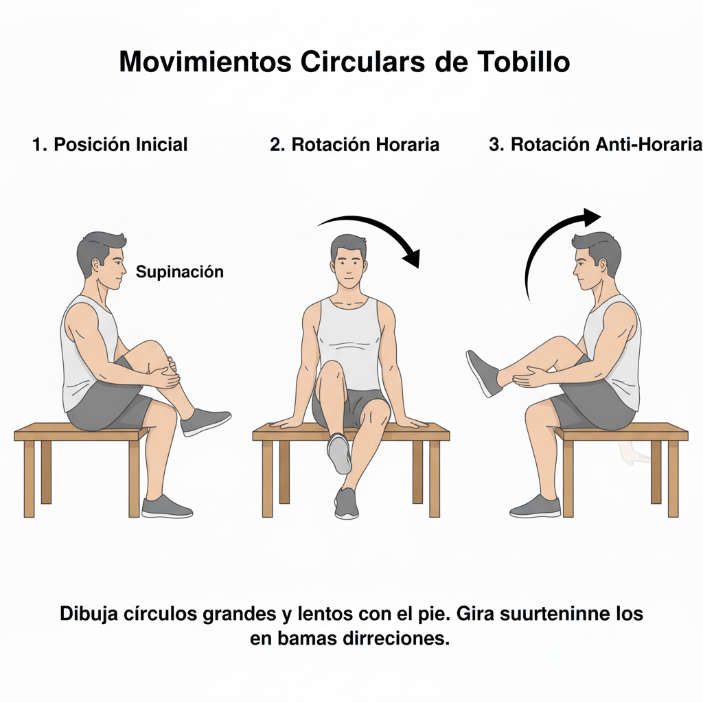
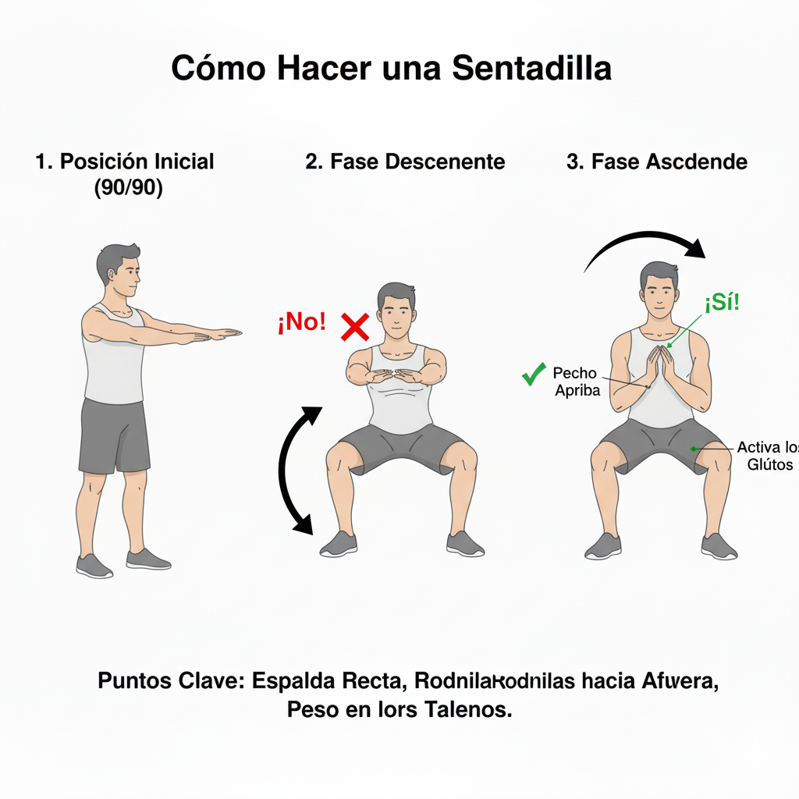
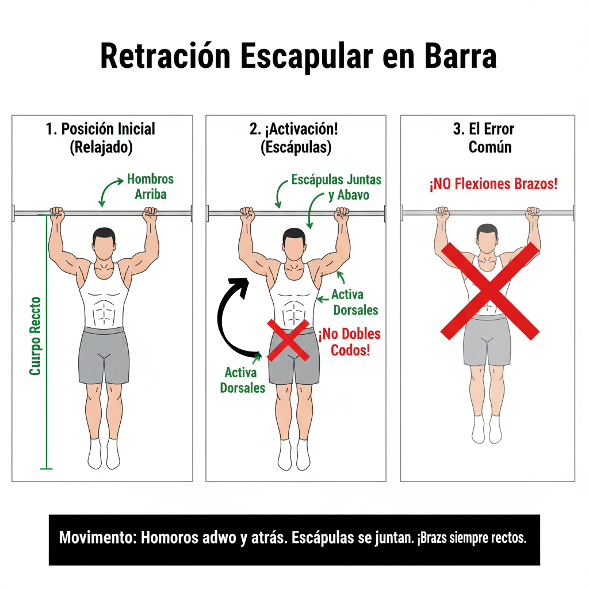

Core muves
Movilidad
-
Rotación de hombros:
Ponte de pie con los pies separados a la altura de las caderas. Mantén la espalda recta, los hombros relajados y los brazos colgando a los lados. Mantén la cabeza erguida y la mirada al frente. El cuello debe permanecer quieto; el movimiento solo debe ocurrir en los hombros. Levanta los hombros directamente hacia arriba, intentando tocar las orejas. Lleva los hombros hacia atrás, sintiendo cómo los omóplatos se juntan suavemente en la espalda. Esto abre el pecho. Lleva los hombros hacia atrás, sintiendo cómo los omóplatos se juntan suavemente en la espalda. Esto abre el pecho. El movimiento debe formar un círculo amplio y continuo: Arriba → Atrás → Abajo → Adelante (para empezar de nuevo). Has el mismo movimiento hacia adelante, sintiendo cómo los omóplatos se separan un poco en la espalda (encorvamiento ligero). -
Rotación de codos:
Ponte de pie o siéntate con la espalda recta. Dobla los codos en un ángulo de 90° y coloca la punta de los dedos de cada mano sobre el hombro correspondiente (mano derecha en hombro derecho, mano izquierda en hombro izquierdo). Los codos deben apuntar hacia afuera. Junta los codos al frente (si puedes), levántalos hacia arriba, sepáralos hacia los lados y luego bájalos, volviendo a la posición inicial. Invierte el movimiento: levanta los codos, sepáralos hacia los lados (abriendo el pecho), júntalos por detrás y bájalos, volviendo a la posición inicial. Mantén las manos fijas en los hombros durante todo el recorrido. Siente cómo la articulación del hombro y la parte superior de la espalda están haciendo la mayor parte del trabajo. -
Rotación de muñecas:
Ponte de pie o siéntate cómodamente con la espalda recta. Extiende los brazos completamente hacia el frente o hacia los lados, a la altura de los hombros. Cierra los puños suavemente, con el pulgar por fuera. Comienza a girar ambas muñecas en movimientos circulares. Haslo en sentido horario y antihorario. -
Rotación de cadera:
Ponte de pie. Si necesitas equilibrio, puedes colocarte cerca de una pared o silla y usar una mano como apoyo.Traslada tu peso al pie de apoyo (la pierna que se queda en el suelo) y mantén esa pierna ligeramente flexionada. Levanta la rodilla de la pierna que vas a rotar hasta que el muslo esté aproximadamente paralelo al suelo (formando un ángulo de 90 grados con el tronco). Desde el frente, lleva la rodilla hacia afuera, abriendo la cadera. Intenta que la rodilla apunte hacia un lado. Continúa el círculo, llevando la rodilla hacia abajo y luego hacia atrás, como si estuvieras pisando un pedal gigante, hasta volver a la posición inicial (rodilla levantada al frente). -
Rotación de rodillas:
Ponte de pie con los pies juntos. Inclínate hacia adelante doblando ligeramente las rodillas. Coloca las palmas de las manos sobre las rótulas. El punto clave para la seguridad es no ponerse en cuclillas completamente ni poner todo tu peso sobre las rodillas. Mantén el peso principalmente en los talones y el torso relativamente erguido. Con las manos guiando, dibuja círculos pequeños y lentos con las rodillas. Mueve las rodillas hacia afuera, luego hacia el centro (ligeramente hacia atrás) y luego hacia adentro. Luego invierte la dirección. El movimiento debe ser mínimo, lento y sin dolor. El objetivo es movilizar suavemente el líquido sinovial (el lubricante de la articulación), no estirar los ligamentos. Si sientes presión o incomodidad lateral, detente. -
Rotación de tobillos:
Lo ideal es hacerlo sentado, ya sea en el suelo con la espalda recta o en una silla. La clave es que el pie esté completamente libre en el aire, sin soportar peso. Dobla la pierna y sostenerla ligeramente con las manos debajo del muslo para asegurar que la pantorrilla y el muslo permanezcan quietos. Con el pie relajado, comienza a hacer círculos amplios y lentos con el tobillo. Imagina que el dedo gordo del pie es un lápiz que dibuja un círculo en el aire. Gira el pie en sentido de las agujas del reloj, asegurándote de pasar por todas las "esquinas": llevar la punta hacia arriba (flexión dorsal), luego hacia afuera (eversión), hacia abajo (flexión plantar) y finalmente hacia adentro (inversión). Repite el movimiento en sentido contrario a las agujas del reloj.






Entrada en calor
- Coloca los pies separados a la anchura de los hombros o ligeramente más. Gira las puntas de los pies ligeramente hacia afuera (entre 10 y 30 grados). Esto ayuda a que las rodillas se muevan de forma natural y cómoda. Mantén la espalda recta (posición neutral de la columna), el pecho elevado y la mirada al frente.
- Contrae el abdomen (activa el core) para dar soporte y proteger la espalda baja durante todo el movimiento. Puedes extender los brazos rectos al frente para mantener el equilibrio o cruzarlos sobre el pecho.
- Piensa en sentarte en una silla que está un poco detrás de ti. Empuja las caderas hacia atrás y, al mismo tiempo, empieza a flexionar las rodillas. Asegúrate de que las rodillas sigan la dirección de las puntas de los pies. No permitas que las rodillas caigan hacia adentro. El peso debe mantenerse en los talones y el medio del pie. Nunca levantes los talones del suelo.
- Baja hasta donde tu movilidad y técnica te lo permitan. El objetivo común es bajar hasta que los muslos estén, como mínimo, paralelos al suelo (formando un ángulo de 90 grados con la pantorrilla), sin comprometer la rectitud de la espalda.
- Empuja fuerte a través de los talones y la planta de los pies para impulsarte de vuelta a la posición inicial. Extiende las rodillas y las caderas de forma simultánea. Al llegar arriba, contrae los glúteos para completar la extensión de cadera. Evita "bloquear" las rodillas (hiper-extenderlas) al final de la repetición.
Sentadillas:
-
Evita que la parte baja de tu espalda se redondee al llegar a la parte más profunda de la sentadilla. Baja solo hasta donde puedas mantener la espalda neutra. Mantén las rodillas alineadas con los pies. Si ocurre, reduce la profundidad o la velocidad. Mantén toda la planta del pie firmemente plantada. Si esto te sucede, puede ser un signo de movilidad limitada en el tobillo.Aunque es natural inclinarse ligeramente hacia adelante, evita que el pecho caiga por completo. Mantén el pecho elevado.

- Sostente de una barra de dominadas con un agarre prono (palmas mirando hacia adelante) o neutro (palmas enfrentadas), con las manos separadas al ancho de tus hombros.
- Deja que tu cuerpo cuelgue completamente. En esta posición, tus hombros estarán cerca de tus orejas, y tus omóplatos (escápulas) estarán en una posición de elevación y protacción (separados y elevados).
- Sin doblar los codos en absoluto, concéntrate en bajar los hombros lejos de las orejas (depresión escapular) y juntar los omóplatos hacia tu columna (retracción escapular).
- Imagina que quieres "sacar pecho" o llevar el esternón hacia la barra. Tu cuerpo se elevará unos pocos centímetros, pero el movimiento es mínimo y se genera por la espalda, no por los brazos.
- Relaja lentamente la musculatura de la espalda para permitir que tus hombros suban de nuevo hacia las orejas, regresando a la posición inicial de "colgado pasivo". Evita simplemente "dejarte caer". El movimiento debe ser lento y controlado tanto al subir como al bajar.
Retracción escapular:

- Coloca las manos en el suelo ligeramente más separadas que el ancho de tus hombros. Los dedos deben apuntar hacia adelante o ligeramente hacia afuera.
- Adopta una posición de plancha alta. El cuerpo debe formar una línea recta desde la cabeza hasta los talones. Contrae el abdomen (core) y los glúteos. Esta activación es crucial para evitar que la cadera se hunda o se eleve demasiado.
- Mantén el cuello en línea con la columna vertebral (mira al suelo, no hacia adelante).
- Inicia el descenso lentamente mientras inhalas. Flexiona los codos, permitiendo que se abran en un ángulo de aproximadamente 45 grados con respecto a tu torso (ni completamente pegados ni totalmente abiertos a 90 grados como una "T"). Mantén el cuerpo rígido y recto como una tabla. Asegúrate de que tu pecho, caderas y muslos bajen juntos. Baja hasta que el pecho esté cerca del suelo o hasta que tus codos formen un ángulo de 90 grados.
- Exhala mientras empujas el suelo con las manos, extendiendo los codos y regresando a la posición inicial. Continúa empujando hasta que los brazos estén completamente extendidos (pero sin "bloquear" la articulación del codo de forma brusca). El cuerpo debe seguir siendo una línea recta en todo momento.
Flexiones de brazos:
-
Progresión para Principiantes
Si al inicio te resulta difícil mantener la técnica con el cuerpo completamente estirado, puedes usar estas variaciones para ganar fuerza: Flexiones Inclinadas (en la Pared o en un Banco): Coloca las manos en una pared, un banco o una superficie elevada. Cuanto más alta esté la superficie, más fácil será el ejercicio. Flexiones con Rodillas Apoyadas: Apoya las rodillas en el suelo (manteniendo la línea recta desde la cabeza hasta las rodillas) y realiza el movimiento completo. Asegúrate de que la cadera no se quede muy elevada.

Rutina principiantes
Dominadas:
Ejercicio de tracción que trabaja espalda, bíceps y hombros.
Te colgás de una barra con las palmas mirando hacia adelante y subís el cuerpo hasta que la barbilla quede por encima de la barra, luego bajás controladamente.
Remos invertidos: Ejercicio para espalda media, brazos y core.
Te colocás debajo de una barra baja, con el cuerpo recto y tirás del pecho hacia la barra, manteniendo los pies apoyados en el suelo.
Plancha: Ejercicio isométrico que trabaja abdomen, espalda y glúteos.
Apoyás antebrazos y puntas de pies, y mantenés el cuerpo recto y firme sin dejar caer la cadera.